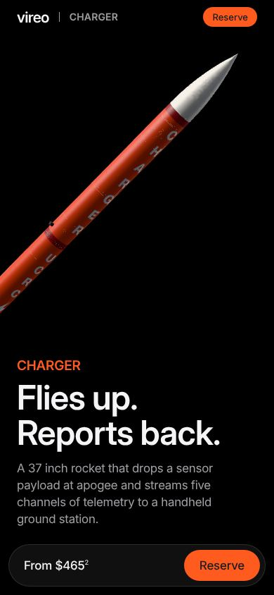

Open Vireo.01 / Sell a product
Vireo
For a hardware startup launching one product.
- Job
- Explain one product until a visitor reserves a kit.
- Borrows
- Apple product pages, analogue.co, a launch webcast
- Its own
- The rocket's real CAD model comes apart as the page scrolls.
- Made from
- CHARGER, the competition rocket I built with my college team.